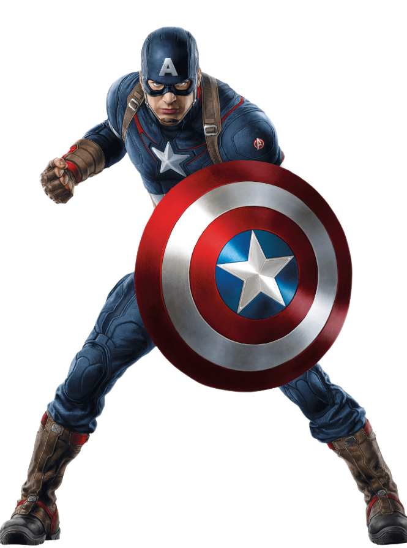

Captain America
Recipient of the Super Soldier serum, World War II hero Steve Rogers fights for American ideals as one of the
world's mightiest heroes and the leader of the Avengers. America's World War II Super-Soldier continues his
fight in the present as an Avenger and untiring sentinel of liberty.
How did Captain America get his powers?
After being infused with the Super-Soldier serum, Steve Roger's body reached the upper-most limits of human
perfection in strength, stamina, agility, and durability. With training, he learned to use these traits in
perfect unison in any given situation.
Why is Captain America The First Avenger?
He is called the first Avenger because he had lived years before Iron Man and Hulk.
Why is Captain America immortal?
Presumably, he does age normally, despite the Super Soldier serum, which keeps him in peak physical condition.
The reason Cap doesn't age between the events of Captain America: The First Avenger and The Avengers is
because he was buried in the ice, which served as a sort of cryogenic preservation
What is Captain America's weakness?
According to the Red Skull, Captain America's biggest weakness is being a man out of time, which has
subsequently made him a "man out of country" as he's missed many of America's darkest chapters (like the
brutal civil rights marches at Selma) while being on ice since WWII.

IronMan
Anthony Edward "Tony" Stark was a billionaire industrialist, a founding member of the Avengers, and the
former CEO of Stark Industries.
A brash but brilliant inventor, Stark was self-described as a genius, billionaire, playboy, and
philanthropist.
With his great wealth and exceptional technical knowledge, Stark was one of the world's most powerful men
following the deaths of his parents and enjoyed the playboy lifestyle for many years until he was kidnapped
by the Ten Rings in Afghanistan, while demonstrating a fleet of Jericho missiles.
With his life on the line, Stark created an armored suit which he used to escape his captors.
Upon
returning home, he utilized several more armors to use against terrorists, as well as Obadiah Stane who
turned against Stark.
Following his fight against Stane, Stark publicly revealed himself as Iron Man.
What is the IQ of Iron
Man?
Their assessment: Tony Stark has an IQ in the neighborhood of 270, which in practical terms is pretty much
off the scale.
To put that score in perspective, consider that it lines up with the highest one ever
recorded in our humble, superhero-less universe.
"My armor, it was never a distraction or a hobby, it
was a cocoon.
And now, I'm a changed man. You can take away my house, all my tricks and toys. But one thing
you can't take away... I am Iron Man."
Thor
Paragon of strength and masculine virility, the storm god Thor was the fiercest of Norse deities.
He was
the
son
of Odin, the “all-father,” and a member of the Aesir tribe of deities.
Among his many abilities, Thor
commanded storms
and rain, and brought lightning and thunder.
Due to his prodigious sexual appetite and his aptitude for
impregnating
women, Thor was also associated with fertility.
He wielded a war hammer called Mjölnir, and was thought
to
have red hair
and a red beard.
Brave, powerful, and righteous, Thor fully embodied the hero archetype.
Where Odin and Loki skulked and
schemed, Thor
faced his problems with a hammer in his hand and violence in his heart.
Whenever a fearsome beast or wily
jötunn
threatened their peace, the gods generally turned to Thor for intervention.
Hulk
Bruce Banner lives a life caught between the soft-spoken scientist he's always been and the uncontrollable
green monster
powered by his rage.
Exposed to heavy doses of gamma radiation, scientist Bruce Banner transforms into
the
mean, green
rage machine called the Hulk.
How did Hulk get his powers?
Following his accidental exposure to gamma rays while saving the life of Rick Jones during the detonation of
an
experimental bomb, Banner is physically transformed into the Hulk when subjected to emotional stress, at or
against his
will.
."
Hawkeye
The man who would become known as Hawkeye was born Clint Barton.
Orphaned at an early age, he joined
the
circus and
apprenticed himself to the Swordsman, a performer who specialized in tricks with blades. After he discovered
the
Swordsman stealing from the circus, the two fought, and Barton was left for dead.
Where did Hawkeye get his powers?
While Clint Barton has no superhuman powers (with the exception of the period when using Pym particles as
Goliath), he
is at the very peak of human conditioning.
He is an exceptional fencer, acrobat and marksman, having
been
trained from
childhood in the circus and by the criminals Trick Shot and Swordsman.
Black Widow
Natalia Alianovna "Natasha" Romanova.
Orphaned as a child, she was rescued during an attack on Stalingrad by a man named Ivan Petrovitch Bezukhov,
who looked
after and trained the girl.
As she grew older, Natasha's talents caught the attention of Soviet
Intelligence, soon to be
known as the KGB, and was recruited into their ranks.
What is the story behind Hawkeye and Black Widow?
Clint and Natasha are best friends. However, at the start of their relationship, Clint Barton (as Hawkeye)
was sent to
eliminate Natasha, but instead, Barton saw her skills and recommended her recruitment.
The two began an
everlasting
partnership, with Barton affectionately calling her "Nat."
How did Black Widow get her powers?
The rest of Natasha's surrogate family is similar to Natasha in terms of capability.
Neither Yelena nor
Melina have
superpowers, but learned their abilities in the Red Room, the brutal brainwashing and conditioning program
that creates
Widows.
Nick Fury
Nicholas Joseph "Nick" Fury is a spy, former Director of S.H.I.E.L.D. and founder of the Avengers.
Fury
began his career
within the United States Army, rising to the rank of Colonel before his honorable discharge. He later became
a CIA
operative during the Cold War, primarily operating in Soviet territory.
How did Nick Fury get his powers?
Fury was selected to be the next test subject for Project: Rebirth, as his blood work most closely matched
that of
Subject #22, the most successful of the previous test subjects.
He was injected with a serum that gave
him
super-strength, which he used to free himself and the other prisoners, who then escaped.
What is special about Nick Fury?
Fury is a seasoned unarmed and armed combat expert, was a heavyweight boxer in the army (during World War
II), and holds
a black belt in Tae Kwon Do and a brown belt in Jiu Jitsu.
He has further honed his unarmed combat
skills
sparring with
Captain America.
ENEMIES
Thanos
He is perhaps the most evil, bloodthirsty, and powerful villain in the universe—so powerful that religious
sects have
worshipped him as a god.
His enemies include nearly every Super Hero in existence.
He is obsessed
with
Goddess Death and
has waged genocidal campaigns in an attempt to placate her.
Most famously, he has attempted to conquer
the
universe by
wielding the Infinity Gauntlet.
He is the Mad Titan.
He is Thanos.
As both god and ruler of the Endless Resurgence empire, Thanos controlled his people through a combination
of force and
fear, viewing freedom as disorder, as a hole in the universe that allows for in randomness and chaos.
He saw
death as an
end to uncertainty, and so, he loved it.
Thanos viewed his reign as the natural order of thing.
To
him, fate
and chance
are always at war, and his rule demonstrates the preeminence of fate.
To help him with his domination,
he
once possessed
a powerful cube that erased the will of his people.
Loki
Loki was born a Frost Giant and abandoned as an infant by his father Laufey, only to be found by Odin during
an invasion
of the realm of the Frost Giants in Jotunheim. Odin used magic to make Loki appear Asgardian and raised him
as a son
alongside Odin's biological son, Thor.
Loki is the Asgardian "God of Mischief", the adopted son of Odin and the adoptive brother of the superhero
Thor.
Loki
has been portrayed as both a supervillain and antihero.
In addition to his magical capabilities, Loki possesses superhuman physical abilities such as an increased
lifespan,
super human strength, immunity to terrestrial diseases, and resistance to conventional injury.
Loki
elevates
his powers
by training in the rites of black magic.
Why is Loki's magic green?
In the Western tradition, green is associated with nature, life, magic, intelligence, evil, and jealousy.
As
such, it is
the perfect color representation of Loki's character, who is intelligent, powerful in magic.
Chitauri
The Chitauri were an alien race led by Thanos.
After he was cast out of Asgard, Loki approached the
Other
offering a
deal: he would retrieve the Tesseract from S.H.I.E.L.D. for Thanos, and in return would receive an army of
Chitauri
which he could use to conquer Earth.
Why did the Chitauri invade Earth?
The Chitauri Invasion was one of the first wars between humanity and extraterrestrials.
The invasion
was
primarily
perpetrated by the exiled Asgardian prince Loki, who intended to subjugate and conquer Earth with an army of
Chitauri
for Thanos in exchange for the Tesseract.